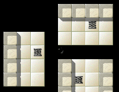
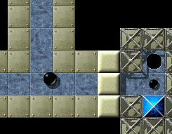
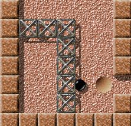
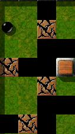
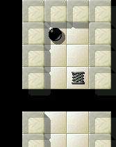
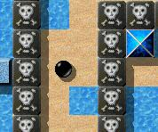
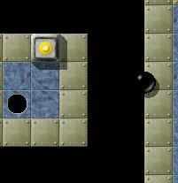

Level of the MonthEach month, we take a closer look at excellent Enigma levels. Excellent levels are those with the highest average user ratings and the greatest number of ratings altogether. Thus it is your vote that determines the Level of the Month. So please rate the levels you play and do not forget to submit your ratings together with your scores at the end of each month. You can find all previous Levels of the Month in our archive. July 2008: “Gods of Enigma II” by moonpearlHi, little ball. I see you've changed a lot. You look tired and worn out, your once black and shiny surface is dusty and scratched. But I do recognize you. I've seen you. You've been to a lot of places. You've explored the most remote corners of the multiple worlds of Enigma a countless number of times. You've explored simple one-screeners and walked on the grounds of the most vast and 'Elaborate' worlds. You've wandered in the magnificent rooms of the fabulous Temple of Gold and strayed into dusty, gloomy long abandoned places, where virtually every step could be your last one.

Enigma V # 69
You flew through abysses protected by nothing but an umbrella and carefully stepped on slippery sheets of ice. You've walked among the thieves of Enigma, miserable creatures whose only desire in their life is to rob someone of his items, even the most unnecessary ones, and among the bones of the long dead adventurers who now want nothing else but to increase their numbers and will snatch anyone who comes near them. You've been a Sisyphus who struggled to carry the unconscious body of your fellow traveler on the steepest slopes and a Zeus who tried to drive your companion to the oxyds, frightening him with lightning bolts from a magic box you had found somewhere on your travels (a good friend you are). But now you have gone TOO FAR. You have ventured into the very heart of Enigma, into the place no mortal (or immortal, for that matter) is allowed even to approach. You have come to the place where the old gods of Enigma dwell, the supreme beings who created the Universe of Enigma millions of years ago and now rule all of its worlds. As half forgotten legends say, once there was a time when they walked on the grounds of the multiple worlds of Enigma, and any marble could seek their advice and protection. But even if there is a grain of truth in those old tales, those times are long gone. Long ago they left the worlds of Enigma, offended by the marbles who misused their good disposition, and now they rule Enigma, unseen to mortal marbles. Their names were long forgotten, and their very existence is doubted by some marble heretics (1), but they do exist. They dwell in their own world that no marble is allowed to approach, and from this world they silently rule the universe of Enigma and the fate of all marbles. And most of all, they guard their precious Oxyds, the fathers of all Oxyds, the ideas of Oxyds, that gave birth to all the other oxyds in the multiple worlds of Enigma. Many courageous marbles have embarked on a journey, dreaming of stealing them, but none has ever come back. None, except you. Yes, I remember you venturing here once. The gods wreaked their wrath on you, using against you the power of the Four Elements of Enigma, but then, impressed by your courage, dexterity and intelligence, they allowed you to leave unscathed.

Strange colours, weird shapes
But you didn't learn this lesson and came here once more. Remember, their kindness is not infinite. This time they won't leave you alive. You find yourself in a dark and gloomy place with strange shapes and colours. You realize at once that those shapes and colours were not meant for the eyes of mortal marbles. Slowly you regain your consciousness. You step carefully. Every step here could send you falling into the infinite abyss of the world of the gods of Enigma. As if to mock you, the gods left around hints for you, as well as extra lives. As if they were sure that you won't be able to leave this place even with such help. Slowly, you move to the first entrance and then … Down, down, down … “Back to the starting room”Actually the level starts off quite harmlessly, a path with just one
possible exit. Alright, nothing ventured nothing gained. Let's get going
then, down along this one-way-street.
Room 1: Many dynamite sticks and many breakable stones. It can't be that
difficult … Boom, boom, boom … Hmm … No, it doesn't seem to work this
way … So it's first top and then bottom, or what else?
Finally I've got the hammer and plunge into the hole in the ground. Back
again at the starting point. Fortunately a second possibility to exit
this room presents itself to me, and luckily the oxydstones seem to have
been arranged in pairs.
Room 2: Oh dear! … Many cracks on the floor, but also enough wooden stones
to build bridges. Really enough? Well, if only I could keep from always
choosing the wrong way or falling down into the abyss, there should be enough
of them. But thanks to the Gods, there's this one seed, which might
serve as a substitute (or should it be used somewhere else?).
Back to the starting room I came to realize that my second guess had
been the right one …
Room 3: Oh Gods, have mercy! I really hate this spring-hopping-across-the-abyss,
especially on slippery floors. Either I'm too fast and overshoot the mark,
or I'm too slow. How good to have some extra lives available about this time.
I was in urgent need of them.
Back to the starting room. Now it's about time to bring up the white
marble. A yin-yang would come in handy …
Room 4: Ah, there it is! And an easy challenge at last. The knights
don't impress me much, I've got the hammer and there's a laser nearby.
Great!
Errr!? … I've died! Why? Ah, invisible death-stones, how nasty! If only
I had some glasses. But there's a way to make them of your own
accord, isn't there?
Finally I've reached the goal, conquered the yin-yang and opened up all
the oxyds.
All in all an excellent level, which consists of all the elements, that
make Enigma such an exciting game (at least to me): strategy, dexterity—and the
possibility to transform objects.
Thanks to the Gods of Enigma and congratulations to Moonpearl!
Down, down, down … What kind of place is this? It doesn't look so gloomy around anymore. You look around one more time. Yes, there are no fatal abysses here. The bright walls around you somehow make you feel secure, and the sand under you surface crunches cheerfully. You remember these walls and this sand. You remember this sound. That's how the sand was crunching on those long nights when you walked on the beach with your friend Anna Whiteball, and the walls here are the walls of her nice tidy little house. Anna … Where is she now? Is she thinking of him? For some moments you allow your thoughts, so sad and so pleasant, to take control over you. Have the gods of Enigma and their laughter, that made you feel as if icy fingers are touching your heart, been just a dream? Is this Anna's house? Have you simply fallen asleep here?

Have the gods taken this place from my memory?
But the document in your inventory shatters all those pleasant thoughts. No, you are still in the world of the gods of Enigma, and now you have to find their bloody hammer. Carefully, you count the dynamite sticks at your disposal. You have to use them with care. Just one dynamite stick put at the wrong place, and you are stuck forever in this room, without any hope to find the Holy Hammer anymore. But at last you do it! You find the Holy Hammer that, if the old legends were true, still remembers being held by Jacob the Builder, who used it to create more worlds than a marble can count. Hurriedly, you break the remaining walls, snatch the Holy Oxyd, and run back to the place where you found the Hammer. And then … Down, down, down … Again you are in the same weird place. You feel that your inventory has somehow become rather heavy. The Hammer! You run to the wall and break it. Behind it you find another passage … Down, down, down …

Nobody seems to have
been here for ages Oh, what a depressing place! You thought that there cannot be a nastier place than the one you just came from, but this … It looks like no one has stepped on this ground for millions of years. This place is so cold … So empty … So desolate … The bridges between the platforms here are so old and insecure that you wouldn't dare to cross them more than once, and even that fills your sole with unease. Thankfully, there are some old rotten wooden blocks here. They will allow you to build new bridges, even if they are just a little more secure than the old ones are. But there are too few of them, so you have to be careful. You move one of them to the abyss, then another, and then … What's this?! Try one more time!!!!!!! Did you really hear a mad inhuman laughter or are you hallucinating? You know what has to be done. You have done it many times, though you never really liked it. You take an extra life from your inventory and then … Down, down, down … Again this very place … Now you have to plan everything even more carefully. It seems like an eternity had passed until you found out how to get to the seed, carefully checking that there are no mistakes in your plan, and then … One block to the abyss, then another, then another, until finally … So, this is the very famous Holy Seed from which all other seeds and blocks have come? It looks like any other seed you've seen on your long journeys. But you don't pause to think it over. Hastily you snatch the Oxyd and then … Down, down, down … Again you are in the same weird place where the entrances to the rooms which hold the Four Holy Items are. You grow a block to make your way to the third entrance, and then … Down, down, down …

I can fly, my frie-e-ends
It's so cold here. But unlike the previous place, the frosty air here is somehow refreshing. It's like a clear cold night somewhere in the mountains. You find yourself on a white shiny platform. Around you can't see anything but similar platforms. The fresh night air and the calm shining of the platforms fill your soul with tranquility. Your way lies to the Holy Spring that, according to the legends, the gods used to look at the newly created worlds from above. You slowly breath in and … W-z-h-h-h-h … One platform. W-z-h-h-h-h … Another one. W-z-h-h-h-h … One more … Here it is! The fabled Spring! You jump a few more times, snatch the Holy Oxyd, return to the place where you found the Spring and then … Down, down, down … “It produces an attraction that I can not resist—and I don't want to”When I got to the third room for the first time I thought: “Oh no!”. To
me this damned “hopping” is a horrible thing. Usually that means: solve
the level once, then leave for good. It really took me quite a few
attempts to finally reach the fourth room with my last ball and then …
You know what happens then. Well, some attempts later I succeeded in
solving the level at last. As I said before usually it's “Once is
enough!” for me in such cases. Yet what does “usually” mean? Somehow
something attracted me to challenge the Gods over and over again. By the
way, I never regretted it, and I enjoyed it with increasing enthusiasm.
What was and what is the reason for me, to play (and keep on playing)
“Gods of Enigma II” again and again? First, there's the procedure how to
play it: it's linear, but always brings you back to the starting point.
And secondly, there's the contrast between the different rooms,
concerning both the visual and the technical aspects. In my opinion the
combination of these two aspects produces an attraction that I can not
resist—and I don't want to.
However, the third room isn't my favourite one (it will probably
never be), but it isn't that naaaasty anymore as it seemed to me the
first time. :-)
Down, down, down … Again this weird place. But this time you see something new. What is it? Oh, no! ANNA! She lies unconscious on the other side of the abyss behind a wall of blocks. You need to talk to her. But how can you do this? You need the last Holy Item. You jump one more time and then … Down, down, down … Have the gods borrowed this beach from your memory? Anna and you … But there's no time for pleasant memories. You have to find the Holy Ying Yang Symbol that would allow you to talk to her at a distance. You make a step and then … Ouch! What's this? You find yourself in that dark weird place again, and there's one extralife less in your inventory. You jump again and then … Down, down, down …

Fighting the dead
The beach again. But now you are careful. You realize that the gods set the bones of the adventurers of the past who came here to steal their Oxyds to guard this place, and far away you see their ghosts barring your way to the Ying Yang symbol. You need two items, one to see the bones under the sand, and the other to fight the ghostly warriors. You don't have them, but luckily there's a laser here, and there's no one in the world of marbles better at transformation than you. Carefully you move to the Oxyd, trying not to touch the bones, then to the line of warriors. A few movements with a sword and the way to the Holy Ying Yang is free. Then … Down, down, down … Again the Place of Entrances … You take the Ying Yang symbol and whisper, “Anna! Anna! Can you hear me?” A slight movement at a distance … “Anna! Please, touch one of the blocks, so that I can get past them.” A slight movement again, and one of the blocks suddenly turns black. The way is free! Never taking your eyes off Anna, you jump and … The idea came to me while playing Hexen IIWe're very happy that we were finally able to get in contact with moonpearl again, and obviously she was quite happy as well … Gotta write a word, now. I can do it. Despite my fingertips trembling over
the keyboard, I can do it. Gotta talk about the making of “Four Elemental
Tests” (or “Gods of Enigma”, or whatever you like to name it). I don't know
what to say. I don't know where to start. So I guess I should start from the
beginning.
I was no more than 7 or 8 years old when I took my first steps into the
world of Oxyd. I remember hurrying to finish hard landscapes because I had
to go to school. I remember being stuck at the 11th landscape for ages,
before I was offered the Oxyd book for my ninth birthday. I remember crying
and bashing the old Atari's dusty mouse when I made a wrong step.
I am now 22, and I've been through all Oxyd. I solved that damned 100th
landscape at the age of 16, under the eyes of my German penpal. I've been
through nearly all “Oxyd magnum!” as well — never solved the last landscape.
:( I've also given a try to “Per.Oxyd” and “Oxyd Extra!”, though I liked the two
of them less than the previous titles — although the graphics were enhanced,
they cruelly lacked the colors which made the world of Oxyd bright and
wonderful.
I thought it was the end of the adventure. I thought I had seen it all and I
would never get to share my passion of Oxyd with other people. And then I
found Enigma. I don't remember exactly how it happened, but I definitely
recall the sparkles in my eyes at that time. I was thrilled to see such a
perfect adaptation, which totally preserved the spirit of my old pal Oxyd.
So, first, I would like to thank Enigma's developers deeply, for not only
giving me the occasion to contribute (modestly) to their work, but also to
return to my childhood's favourite hobby.
To my further delight, a level editor was featured with the game. It was a
real opportunity for me to give shape to the Oxyd landscapes I used to draw
in my old exercise-books — normal children draw people and houses and
flowers, but I preferred Oxyd landscapes. ;) And so did I. I used
BlackBallEd to write a bunch of landscapes, most of which look too “mundane”
to me. I mean by that, most ideas have already been used in former
landscapes, and it's really hard to come up with something brand new.
However, I was determined to find a both fun and atypical concept. I gave much
thought to what a friend of mine once said: “How can you identify yourself
as a marble? What is your reason to be, your goal in life, aside from
solving puzzles?”. And that's how I started to make up some kind of
storyline where the player would get to embody the saviour of a world ruined
by evil deities, thus travelling through wrecked landscapes with lots of
cracks, falls and breakable stones …
The very idea of the “Four Elemental Tests” came to me while playing Hexen II
— yes, play up to the third episode, and you'll see. ;) I meant to build a
landscape which would require all of the player's skills to solve — that is
to say, swiftness, intelligence, dexterity and patience. Each of the four
tests is mildly difficult, but the real challenge lies in succeding in all of
them at once. To be honest I tried the landscape many times to make sure it
was possible, but I've been through it only a very few times. So I thought
it would be fine for the rest of the community, which seems to enjoy very
challenging landscapes. ;)
I don't know how I came to write a second episode, but I do remember that I
wanted to try something different. While the first one was merely a linear
adventure, I wanted to make for the second one four separate quests to
“unlock” the path in the very first screen. I also decided to change the
content of the tests, but I had to keep them in association with their
respective elements. What I'm quite proud of is that I've managed to stick
to the four elements, while mixing the tests — thus, the Fire Quest includes
intelligence, the Earth Quest dexterity …
That was three years ago. And a few days ago I found an e-mail from Harry
among all the spam in my mailbox. :s At first I thought it was a joke. How
could an old landscape of mine be voted level of the month? Then Harry
pointed out that my work had also been awarded 2007's best level series.
And, well …
IT'S JUST TOO MUCH FOR ME!!! ;)
No, seriously, I haven't won an Oscar yet, but it means very much to me to
be praised as a level designer. The little girl moving the mouse carefully
with her right hand, while sucking her left thumb, has grown into someone
with the power to create. Maybe it's the reason why I made a landscape
requiring all the talents at once to defy the gods …
Anyway, I'll finish this (long) article with good news for my fan club. ;)
Indeed, the “Four Elemental Tests” are not an isolated work. The two
landscapes were actually designed as steps of a whole trip through four
realms — each associated with an element, as you can guess. I intended to
make several “Four Elemental Tests”, which would appear at regular
intervals, just like meditation landscapes. A few other landscapes of the
series are already available, and all of your positive feedback gives me the
urge to work on it again. Hopefully, I can design as much as possible of the
series until the end of year. I'll try to keep in touch and give news this
summer.
Thanks for reading my article.
Thanks for playing my landscapes.
Thanks for loving them.
Moonpearl, thanks for creating them for us. And your idea to embed the level into a full storyline has since been used by many other authors as well, with resounding success, like in the case of “The Aztec Temple” and lots of levels in our next release of Enigma. We all look forward to your next levels! :-)

The last jump
Down, down, down … They say that the abysses in the world of gods are infinite, and you can be falling into one for a million years without seeing the bottom. You've always wondered if it's true. Now you'll be able to find it out! BWA-HA-HA-HA-HA-HA-HA-HA-HA-HA-HA-HA-HA-HA-HA!!!!!!!! (1) According to an apocrypha found by the legendary adventurer called Moneymaker under a chameleon stone when he was exploring an unintended shortcut, the names of at least some of those gods were Daniel, Andreas, Ronald and Raoul. But the authenticity of that document is still being widely disputed in the learned marble circles. Ludmian Sedai Dear reader, we have a constant need for articles from you about Enigma's great levels. Please, send us any articles, even comments, you write to: enigma-devel@nongnu.org We're particularly interested in articles about the following levels:
Many thanks in advance, only your help can keep the LotM alive! Your Enigma Team |